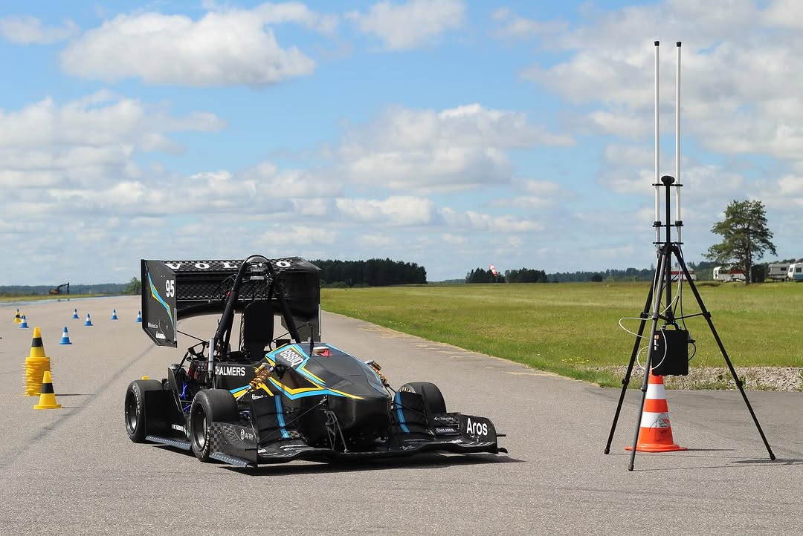
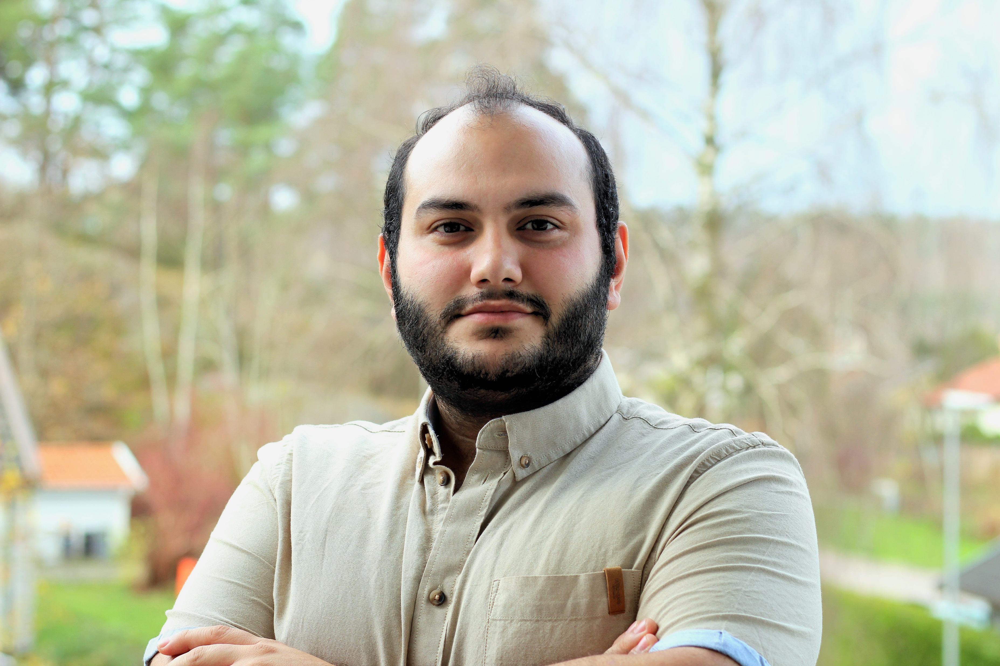
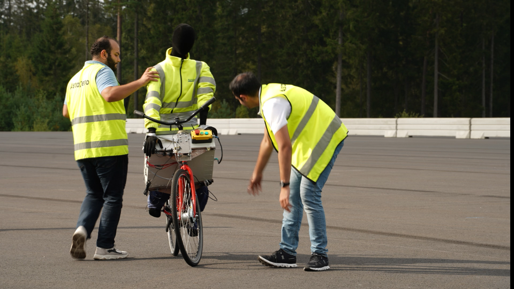
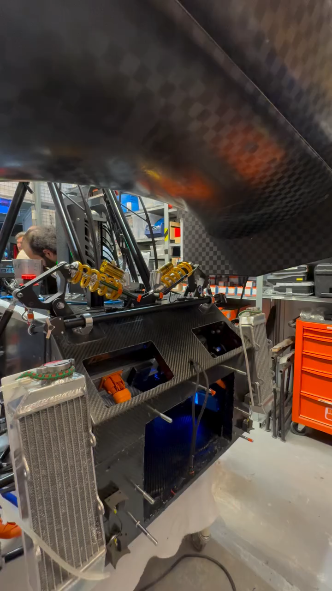

01 / Autonomous vehicle
Chalmers Formula Student
Electrical project engineer responsible for low-voltage systems on the self-driving car, connecting LiDAR, IMU, onboard compute, telemetry, Ethernet and CAN.
Control systems for the real world.
I’m Ayman, a control and systems engineer drawn to the space between a model and a machine. My work spans vehicle automation, control design, sensor fusion and hands-on mechatronics.

From following a satellite across a moving vehicle to wiring an autonomous race car, I like work where software meets the physical world.

Electrical project engineer responsible for low-voltage systems on the self-driving car, connecting LiDAR, IMU, onboard compute, telemetry, Ethernet and CAN.
Developed a prototype antenna system for continuous satellite tracking on moving vehicles. Built a Simulink environment, modeled system dynamics, and designed control and sensor-fusion algorithms.

A practical mobility build from a broad set of hands-on projects, alongside work with tank systems, flow control, industrial robots and PLCs.
Built practical experience with industrial robotics and PLCs, alongside flow-control and tank-system projects. The common thread: getting a model to behave reliably on real hardware.

Roles across automotive testing, research, student motorsport and measurement have given me a broad view of how complex systems come together.
Developing automated test infrastructure for vehicle assembly, from test preparation and execution to log management and results presentation.
Designed and simulated control and sensor-fusion systems for continuous satellite tracking from moving vehicles, then validated the work on a prototype.
Responsible for electrical systems on the autonomous car. The team placed first in the Driverless Cup at FSG and second in FSE in 2024.
Performed X-ray radiation measurements, compared results with reference data and updated sensor software to improve accuracy.
I hold a bachelor’s degree in Automation and Mechatronics and a master’s degree in Systems, Control and Mechatronics from Chalmers University of Technology. I enjoy taking a system from first principles through simulation and into a working test.
Get in touchChalmers University of Technology
Chalmers University of Technology
Professional working proficiency
For engineering opportunities, collaborations or a good conversation about controls and mobility, send me a note.